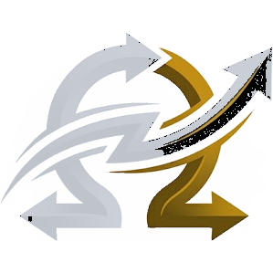

Fatia espaço-temporal
Original
Amplificado
t = 0tempo →
A fatia empilha, quadro a quadro, os pixels de uma linha que cruza o ponto de medição. Oscilações aparecem como ondulações ao longo do tempo.

OhmCinética Vibra · inspeção de ODSInspeção estrutural · amplificação de movimento
O Vibra amplifica visualmente oscilações quase invisíveis em vídeos de peneiras, pórticos, passarelas e tubulações, para revelar a forma de deflexão operacional (ODS) e apoiar a triagem em campo. Tudo roda no navegador, sem IA e sem enviar o vídeo.
Bancada de comparação
Importe um arquivo ou abra a régua virtual.
O resultado aparece após o processamento.
0,0 s · mantenha a página aberta
A referência mantém a nitidez da prévia (até 512 × 384). No modo clássico, a grade calcula o movimento e os pixels da prévia são reposicionados.
Análise do movimento
Disponível após o processamento. Toque no painel amplificado para escolher o ponto de medição.
A fatia empilha, quadro a quadro, os pixels de uma linha que cruza o ponto de medição. Oscilações aparecem como ondulações ao longo do tempo.
Deslocamento filtrado na faixa, em pixels da prévia, antes do ganho visual. Não é uma medição calibrada.
Amplitude por frequência do sinal já filtrado. Serve para conferir a frequência dominante, não para validar a faixa.
A forma de deflexão operacional é o padrão de deslocamento da estrutura respondendo às excitações reais de operação. Por isso ODS ≠ forma modal: ela depende de como a máquina está trabalhando naquele momento.
Clássico: estima pequenos deslocamentos locais (Lucas–Kanade), filtra a faixa temporal e reposiciona os pixels da prévia com (α−1)·δ. Fase: banco complexo multiescala inspirado em Wadhwa et al. (2013), sem reproduzir integralmente a pirâmide do artigo.
Supõe câmera fixa, movimentos pequenos e brilho constante. Reflexos, baixa textura, bordas do recorte e início/fim do trecho geram artefatos. A leitura por instantes no navegador não substitui um decodificador científico. Não testado no Galaxy M55.